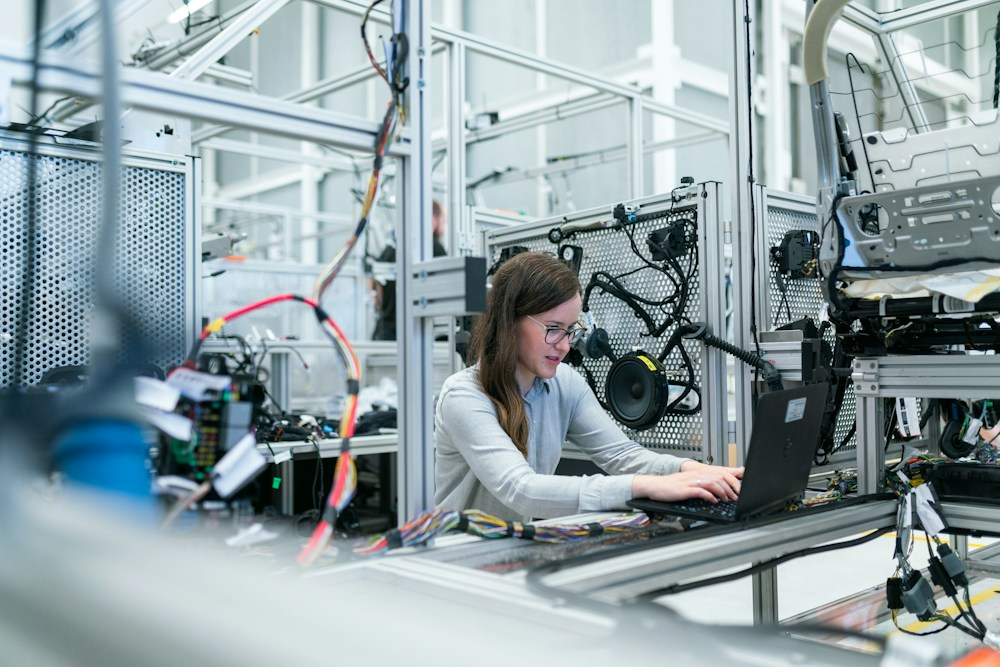

17 años
Tijuana, Baja California, México
Un futuro relacionado con la ingeniería

Después de la preparatoria
Después de la preparatoria me gustaría estudiar algo relacionado con la ingeniería, especialmente mecatrónica o mantenimiento industrial. Todavía comparo esas opciones, pero ambas me interesan porque combinan conocimientos técnicos con problemas del mundo real.
Quiero investigar cómo son las carreras, qué materias se llevan y en qué lugares puede trabajar una persona egresada. A la par, me gustaría mejorar mi capacidad para explicar ideas y documentar proyectos. Mi objetivo es desarrollar una profesión que me permita participar en la industria de Tijuana y seguir aprendiendo con la experiencia.
Mis objetivos paso a paso
Ahora
Mantener una rutina de estudio y completar los proyectos escolares con orden.
Al terminar la preparatoria
Comparar opciones universitarias y elegir una carrera relacionada con la ingeniería.
Más adelante
Participar en proyectos técnicos y adquirir experiencia en una empresa de la región.
Algo que me gustaría construir
Me gustaría construir una maqueta que utilice mecanismos sencillos, por ejemplo un pequeño puente móvil. Primero dibujaría el diseño, después revisaría los materiales y finalmente probaría si las piezas se mueven como había planeado.
Ese tipo de proyecto me permitiría descubrir si disfruto más el diseño, el armado o la búsqueda de fallas. Antes de elegir una carrera quiero conocer talleres y conversar con personas que trabajen en áreas técnicas de Tijuana.
Lo que quiero tener presente
«Aprender algo nuevo vale más cuando puedo ponerlo en práctica.»